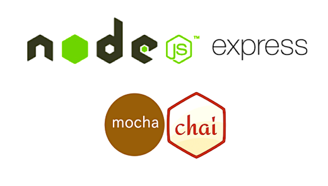

Construim una API Rest amb Node.js, SQLite i Express JS

En esta pràctica construirem una API Rest utilitzant Node.js, SQLite i Express.js.
Els principals components de la nostra API seran:
- El projecte Node.js creat amb NPM
- Un servidor web creat amb Express.js per a gestionar els endpoints, les peticiions i les respostes
- Una base de dades SQLite per a guardar la informació del backend
Les aplicacions reals no utilitzen normalment SQLite, però ho fem així ja que d'esta forma ens estalviem tindre que configurar un sistema gestor de base de dades com puga ser MySQL.
Requisits previs
Abans de començar necessitem instal·lar Node.js i git per a crear un repositori local.
Projecte Node.js
Per començar amb el nostre projecte, crearem una carpeta i iniciarem un projecte amb npm:
mkdir APIRest-node-express-SQLite
cd APIRest-node-express-SQLite
npm init
NPM ens demanarà informació sobre el nostre projecte. Els camps més importants són el package name i l'entry point. En el nostre cas, el punt d'entrada d'execució del projecte serà un arxiu anomenat server.js (el nostre servidor Express.js).
{
"name": "apirest-node-express-sqlite",
"version": "1.0.0",
"description": "APIRest amb nodejs, express i sqlite.",
"main": "server.js",
"scripts": {
"test": "echo \"Error: no test specified\" && exit 1"
},
"author": "Ferran Cunyat Pellicer",
"license": "GPL-3.0-or-later"
}
Amb npm instal·lem algunes dependències que necessitem:
npm install express sqlite3 md5
npm install --save-dev nodemon
Si observes l'arxiu package.json veuràs que se'ns han afegit estes dependències.
Creeu un repositori de github també per guardar el vostre codi. Recordeu afegir node_modules al vostre .gitignore.
echo node_modules > .gitignore
git init -b main
git add .
git commit -m "Primer commit"
git remote add origin <URL_REMOTA>
git remote -v
git push origin main
El servidor Express.js
Ara podem crear el nostre script principal server.js que servirà de punt d'entrada al servidor utilitzant express.js. Expresss.js ens permet en poques línies tindre un servidor web funcionant:
// Create express app
var express = require("express")
var app = express()
// Server port
var HTTP_PORT = 9000
// Start server
app.listen(HTTP_PORT, () => {
console.log("Servidor escoltant a l'adreça http://localhost:%PORT%".replace("%PORT%",HTTP_PORT))
});
// Root endpoint
app.get("/", (req, res, next) => {
res.json({"message":"Ok"})
});
// Insert here other API endpoints
// Default response for any other request
// Default response for any other request
app.use(function (req, res) {
res.status(404).json({ "error": "Invalid endpoint" });
});
En el codi podem identificar alguns punts importants:
- El servidor express (app)
- El port sobre el que escolta el servidor (HTTP_PORT)
- Un primer endpoint a l'arrel (http://localhost:HTTP_PORT/)
- Una resposta per defecte per a la resta de rutes dns del servidor. Resposta HTTP 404 Not found)
Executem el servidor
Ara, podem afegir un nou punt d'entrada en l'arxiu package.json per a executar el servidor utilitzant npm run.
"scripts": {
"start": "nodemon server.js",
"test": "echo "Error: no test specified" && exit 1"
},
Ara podem executar el nostre servidor amb npm run start.
Si tot ha anat bé, en consola ens apareixerà Servidor escoltant a l'adreça http://localhost:9000.
Ara si podràs accedir a l'arrel del servidor través del navegador al nostre servidor. Obtindràs com a resposta un json amb el missatge Ok.
``javascript
Resposta:
{
"message": "Ok"
}
Al configurar nodemon server.js com a punt d'entrada, cada vegada que fem canvis al nostre codi, el servidor es llançarà de nou amb el nou codi.
Connectem a la base de dades SQLite
Arribats a este punt, tenim un servidor funcionant, però necessitem que este servidor es connecte a una base de dades per a que l'API consumisca dades des d'ella i envie la resposta al client. En una aplicació real, normalment aniriem contra un altre servidor connectat per xarxa amb un sistema de gestió de bases de dades tipus MySQL, MariaDB, MongoDB, ... però per simplicitat utilitzarem SQLite.
SQLite és una implementació d'una base de dades que funciona contra arxius locals, sense necessitat de tindre tot un sistema que ens gestione la base de dades. Per connectar, utilitzarem la llibreria de javascript sqlite3.
En un nou arxiu database.js crearem un arxiu de connexió i d'inicialització de la base de dades.
var sqlite3 = require('sqlite3').verbose()
var md5 = require('md5')
const DBSOURCE = "db.sqlite"
let db = new sqlite3.Database(DBSOURCE, (err) => {
if (err) {
// Cannot open database
console.error(err.message)
throw err
}else{
console.log('Connected to the SQLite database.')
db.run(`CREATE TABLE user (
id INTEGER PRIMARY KEY AUTOINCREMENT,
name text,
email text UNIQUE,
password text,
CONSTRAINT email_unique UNIQUE (email)
)`,
(err) => {
if (err) {
// Table already created
}else{
// Table just created, creating some rows
var insert = 'INSERT INTO user (name, email, password) VALUES (?,?,?)'
db.run(insert, ["admin","admin@example.com",md5("admin123456")])
db.run(insert, ["user","user@example.com",md5("user123456")])
}
});
}
});
module.exports = db
Fixem-nos en alguns punts importants del codi:
- Carreguem les llibreries md5 i sqlite3.
- Intentem connectar a una base de dades
db.sqlite:- En cas de no existir, sqlite la crearà (en un arxiu).
- Una vegada creada, intenta crear una taula d'usuaris que contindrà els noms, correus i contrasenya.
- Si la taula no existia, insertarà alguns usuaris i les seues contrasenyes.
- Si la taula ja exixtia, no els insertarà.
- Exportem la base de dades per poder utilitzar-la en altres scripts de javascript.
Afegim l'API REST amb endpoints d'accés a dades
Amb la connexió a la base de dades creada, anem a utilitzar-la en el servidor. El primer que haurem de fer és importar el codi en l'arxiu server.js.
var express = require("express")
var app = express()
var db = require("./database.js")
Per a una API REST, l'objectiu principal és crear una font de dades sense estat, uniforme, sota demanda i basada en URI, que represente entitats en un format estàndard (en aquest cas, una resposta JSON). Les principals operacions/punts finals que podeu implementar en un servei REST són:
| Operació | Mètode HTTP | Endpoint |
|---|---|---|
| Obtindre llista d'usuaris | GET | /api/users/ |
| Obtindre un usuari per id | GET | /api/user/{id} |
| Crear un usuari | POST | /api/user/ |
| Actualitzar un usuari donat el seu id | PATCH | /api/user/{id} |
| Eliminar un usuari per id | DELETE | /api/user/{id} |
Obtindre llista d'usuaris
El primer endpoint de l'API serà obtindre la llista d'usuaris. El següent codi de server.js crearà un endpoint per a obtindre una llista d'usuaris. Tingues en compte que has de posar el codi abans del fragment de resposta per defecte en cas d'accedir a un endpoint inexistent.
app.get("/api/users", (req, res, next) => {
var sql = "select * from user"
var params = []
db.all(sql, params, (err, rows) => {
if (err) {
res.status(400).json({"error":err.message});
return;
}
res.json({
"message":"success",
"data":rows
})
});
});
- Cada endpoint d'Express.js rep un objecte
req(request) que conté les capçaleres, els paràmetres i el cos de la petició, i un objecteresque contindrà el contingut de la resposta i capçaleres adicionals. - db.all(sql, params, callback) és un comandament contra SQLite per obtindre tots els registres d'una petició SQL. La funció de callback, rep un objecte d'error
errirow, les files rebudes de la base de dades.- Si hi ha algun problema amb la petició SQL, l'error serà un objecte no nul i la funció de callback tornarà un HTTP 400 (Petició incorrect) i un JSON amb el missatge d'error.
- Si tot va com cal, tornarà un JSON amb el missatge i les dades (un array de registres/files).
Obtindre un usuari per id
app.get("/api/user/:id", (req, res, next) => {
var sql = "select * from user where id = " + req.params.id
db.get(sql, (err, row) => {
if (err) {
res.status(400).json({"error":err.message});
}else{
res.json({
"message":"success",
"data":row
})
}
});
});
- En este cas, en compte d'obtindre tota la llista d'usuaris, en la petició s'enviarà l'id de l'usuari que es vol obtindre i en la resposta obtindrem solament una fila/registre de la base de dades. Utilitzarem per fer-ho un endpoint especial d'Express amb una variable
(:id), mapejada a la variable corresponent de la peticióreq.params.id. Per exemple, una petició/api/user/1filtrarà la petició utilitzant id = 1. - Utilitzant la funció
db.geten compte dedb.allobtenim una sola fila i no una llista.
En este moment podeu realitzar el primer dels exercicis.
Crear un usuari
En este cas, el mètode HTTP utilitzat serà POST per a enviar les dades en les capçaleres i no a través de la URL. Normalment estes dades s'envien codificades en forma de URL des d'un formulari. Necessitem aleshores fer un processat de la petició POST per obtindre les dades que envia el client. Ho fem insertant el següent fragment de codi al server.js:
var bodyParser = require("body-parser");
app.use(bodyParser.urlencoded({ extended: false }));
app.use(bodyParser.json());
El middleware body-parser intenta obtindre les dades de la petició. Per això analitza el contingut del body que es solen enviar com a URL encoded, com en este cas, o com a JSON i les guarda en un objecte req.body. A l'endpoint següent utilitzem este objecte:
app.post("/api/user/", (req, res, next) => {
var errors=[]
if (!req.body.password){
errors.push("No password specified");
}
if (!req.body.email){
errors.push("No email specified");
}
if (errors.length){
res.status(400).json({"error":errors.join(",")});
return;
}
var data = {
name: req.body.name,
email: req.body.email,
password : req.body.password
}
var sql ='INSERT INTO user (name, email, password) VALUES (?,?,?)'
var params =[data.name, data.email, data.password]
db.run(sql, params, function (err, result) {
if (err){
res.status(400).json({"error": err.message})
return;
}
res.json({
"message": "success",
"data": data,
"id" : this.lastID
})
});
})
- Utilitzem app.post() per a restringir el mètode sols a POST.
- El
req.bodycontindrà les dades del formulari que envia el client.- Les dades en cru tindrien un aspecte com el següent:
name=test&email=test%40example.com&password=test123 - El
body-parserconvertirà l'anterior cadena en un objecte JSON.{name:'test', email: 'test@example.com', password: 'test123'} - Comprovem els camps obligatoris. Si en la petició estan en blanc, tornarem un
HTTP 400(Bad Request) amb la llista d'errors.
- Les dades en cru tindrien un aspecte com el següent:
- Utilitzem
db.run(sql, params, callback)amb una instrucció INSERT a l'sql, i els valors a guardar.- La funció de callback comprovarà si hi ha algun error
(err != null). - Si tot va com cal, retornem un JSON amb un missatge com a que ha anat bé, les dades insertades i l'id del nou usuari. Este id és útil en el client si es vol recuperar l'usuari després de la seua creació.
- Fixeu-se que ací no utilitzem la notació de funció fletxa com fins ara, per a poder fer ús de l'objecte
thisi poder recuperar el lastID.
- La funció de callback comprovarà si hi ha algun error
En este moment podeu realitzar el segon, tercer i quart exercicis.
Actualitzar un usuari donat el seu id
Per a operacions d'actualització, utilitzem el mètode patch d'Express.js, que s'utilitza per a reemplaçar dades. Enviem des del client un subconjunt de dades a ser reemplaçades.
L'endpoint quedaria així:
app.patch("/api/user/:id", (req, res, next) => {
var data = {
name: req.body.name,
email: req.body.email,
password : req.body.password ? md5(req.body.password) : null
}
db.run(
`UPDATE user set
name = COALESCE(?,name),
email = COALESCE(?,email),
password = COALESCE(?,password)
WHERE id = ?`,
[data.name, data.email, data.password, req.params.id],
function (err, result) {
if (err){
res.status(400).json({"error": res.message})
return;
}
res.json({
message: "success",
data: data,
changes: this.changes
})
});
})
- Ja que algun dels camps poden estar buits perquè no es volen actualitzarm utilitzem la funció COALESCE per a obtindre el primer valor no nul, de forma que actualitzem en cas de ser null i deixem el camp amb el valor que ja tenia en cas d'enviar-lo a null des del client.
- De nou utilitzem la notació clàssica de funcions de callback per a accedir a
this.changes, que ens torna el nombre de files actualitzat. Este número es podria utilitzar per a comprovar si s'han actualitzat dades o no, per a actualitzar la interfície de l'usuari per exemple.
En este moment pots fer l'exercici 5
Eliminar un usuari per id
La implementació d'este endpoint es deixa com a exercici 6
En l'exercici 9 comprovaràs si es vulnerable a SQLi
Exercicis
- L'endpoint de consulta d'usuari per id és vulnerable a atacs d'injecció d'SQL? Demostra la teua afirmació.
- Utilitza Postman per a insertar un usuari.
- Utilitza curl per a insertar un usuari.
- Veus alguna configuració dèbil en l'endpoint de creació d'usuari? Si és el cas, corregix-la.
- Prova l'API d'actualització d'usuaris utilitzant postman. Canvia noms, correus i contrasenyes.
- Prova l'API d'actualització d'usuaris utilitzant curl. Canvia noms, correus i contrasenyes.
- Construix l'endpoint d'eliminació d'uausris. Utilitza el mètode delete d'Express.
- Fes proves amb postman i amb curl.
- L'endpoint d'eliminació d'usuaris que has implementat és vulnerable a atacs d'injecció d'SQL? Comprova-ho.